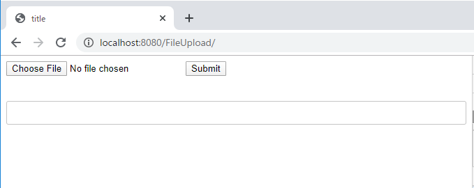
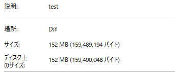
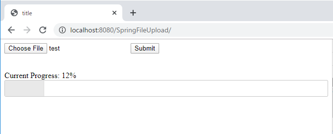
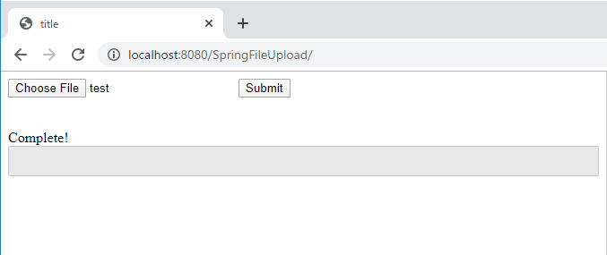
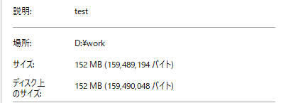

[Java] サーブレット(Servlet)の環境でファイルアップロード(プログレスバーでファイルアップロード状態を表示する方法)する方法
こんにちは。明月です。
この投稿はJavaのサーブレット(Servlet)の環境でファイルアップロード(プログレスバーでファイルアップロード状態を表示する方法)する方法に関する説明です。
以前、Springプレームワーク環境でアップロードする方法に関して説明したことがあります。
link - [Java] Spring環境でファイルアップロード(プログレスバーでファイルアップロード状態を表示する方法)する方法
JSPの領域の部分はサーブレットと同じだと思いますが、サーバーサイドの実装が違うので説明します。
サーブレットのプログラムを構築する方法に関しては以前に説明したことがあります。
link - [Java] Web serviceプログラムのServletを作成方法(Eclipse)
先にサーブレットのウェブサービスを構築してindex.jspファイルを作成しましょう。
<%@ page language="java" contentType="text/html; charset=UTF-8" pageEncoding="UTF-8"%>
<!DOCTYPE html>
<html>
<head>
<title>title</title>
<!-- jquery cdn プログレスバーを使うように参照する。 -->
<link rel="stylesheet" href="https://code.jquery.com/ui/1.12.1/themes/base/jquery-ui.css">
</head>
<body>
<!-- ファイルアップロードするデータを設定するフォーム。enctypeは「multipart/form-data」だ。 -->
<form enctype="multipart/form-data">
<input type="file" name="data">
<input type="submit">
</form>
<br />
<br />
<!-- ファイルアップロードする状況を表示するプログレスバーラベル -->
<div class="progress-label"></div>
<!-- ファイルアップロードする状況を表示するプログレスバー -->
<div id="progressbar"></div>
<!-- jquery cdn -->
<script src="https://code.jquery.com/jquery-3.4.1.min.js"></script>
<!-- フォームを非同期に転送するライブラリcdn -->
<script src="https://cdnjs.cloudflare.com/ajax/libs/jquery.form/4.2.2/jquery.form.min.js"></script>
<!-- プログレスバーのためのuiライブラリ -->
<script src="https://code.jquery.com/ui/1.12.1/jquery-ui.min.js"></script>
<script>
// document onloadイベント
$(function() {
// プログレスバー要素を取得
var progressbar = $("#progressbar");
// プログレスバーラベル要素を取得
var progressLabel = $(".progress-label");
// プログレスバーを設定
progressbar.progressbar({
value: true,
// プログレスバーのデータが変更される時に呼ばれるイベント
change: function() {
// プログレスバーのラベルに状況を表示する。
progressLabel.text("Current Progress: " + progressbar.progressbar("value") + "%");
},
// プログレスバーのデータが完了, valueが100になると呼ばれるイベント
complete: function() {
// プログレスバーのラベルに環境の文言を表示する。
progressLabel.text("Complete!");
// フォーカスを変更
$(".ui-dialog button").last().trigger("focus");
}
});
// フォームを非同期でsubmitする。
$('form').ajaxForm({
// Requestはuploadだ。
url: "upload",
// メソッドタイプはPOST
type: "POST",
// Submitする前にイベント
beforeSubmit: function(arr, $form, options) {
// プログレスバーに0を設定
progressbar.progressbar( "value", 0 );
},
// Submitの状況で呼ばれるイベント
uploadProgress: function(event, position, total, percentComplete) {
// プログレスバーにデータ数値を設定
progressbar.progressbar( "value", percentComplete );
},
// Submitが完了する時に呼ばれるイベント
success: function(text, status, xhr, element) {
// プログレスバーに100を設定
progressbar.progressbar( "value", 100 );
}
});
});
</script>
</body>
</html>
上のソースはSpringプレームワーク側で作成したjspファイルと同じです。
「localhost/upload」のパスでファイルをアップロードするでしょう。
import java.io.File;
import java.io.IOException;
import java.util.Collection;
import javax.servlet.ServletException;
import javax.servlet.annotation.MultipartConfig;
import javax.servlet.annotation.WebServlet;
import javax.servlet.http.HttpServlet;
import javax.servlet.http.HttpServletRequest;
import javax.servlet.http.HttpServletResponse;
import javax.servlet.http.Part;
// ファイルアップロードするようには「MultipartConfig」のアノテーションが必要。
@MultipartConfig
// アップロードするURLは「localhost/uplaod」だ。
@WebServlet("/upload")
// サーブレットクラス生成
public class UploadServlet extends HttpServlet {
// シリアライズID
private static final long serialVersionUID = 1L;
// コンストラクタ
public UploadServlet() {
super();
}
// ファイルアップロードはPOSTメソッドでバウンダリー要請が来る。「doGet」関数はいらない。
protected void doPost(HttpServletRequest request, HttpServletResponse response) throws ServletException, IOException {
// バウンダリーリスト取得
Collection<Part> parts = request.getParts();
// バウンダリーを繰り返して
for (Part part : parts) {
// アップロードファイル名が設定されてないなら、continue
if (!part.getHeader("Content-Disposition").contains("filename=")) {
continue;
}
// ファイルを取得する。
String fileName = extractFileName(part.getHeader("Content-Disposition"));
// ファイル名があるし、ファイルサイズが0以上なら格納する。
if (fileName != null && part.getSize() > 0) {
// 「d:\work」フォルダにファイルを格納する。
part.write("d:\\work\\" + File.separator + fileName);
// バウンダリー削除
part.delete();
}
}
}
// ヘッダーからファイル名を取得する関数
private String extractFileName(String partHeader) {
// ヘッダーは「;」の区切りでデータがある。
for (String cd : partHeader.split(";")) {
// ファイル名があれば、
if (cd.trim().startsWith("filename")) {
// ファイル名を取得して返却する。
String fileName = cd.substring(cd.indexOf("=") + 1).trim().replace("\"", "");
int index = fileName.lastIndexOf(File.separator);
return fileName.substring(index + 1);
}
}
// なければnullを返却
return null;
}
}
アップロードするためにweb.xmlを設定する必要があります。
<?xml version="1.0" encoding="UTF-8"?>
<web-app xmlns:xsi="http://www.w3.org/2001/XMLSchema-instance"
xmlns="http://java.sun.com/xml/ns/javaee"
xsi:schemaLocation="http://java.sun.com/xml/ns/javaee http://java.sun.com/xml/ns/javaee/web-app_3_0.xsd"
version="3.0">
<!-- プロジェクト名 -->
<display-name>FileUpload</display-name>
<!-- rootのパス -->
<welcome-file-list>
<!-- localhost/FileUpload/index.jspで設定した。 -->
<welcome-file>index.jsp</welcome-file>
</welcome-file-list>
<servlet>
<!--サーブレット名 -->
<servlet-name>FileUploadServlet</servlet-name>
<!-- アップロードする時に呼ばれるクラス。 -->
<servlet-class>servlet.FileUploadServlet</servlet-class>
<multipart-config>
<!-- ファイルアップロードサイズを設定しない(-1) -->
<max-file-size>-1</max-file-size>
<!-- 要請するサイズ(ヘッダとボディ)サイズを設定しない(-1) -->
<max-request-size>-1</max-request-size>
<!-- バッファサイズ -->
<file-size-threshold>1024</file-size-threshold>
</multipart-config>
</servlet>
<servlet-mapping>
<!-- サーブレットマッピング -->
<servlet-name>FileUploadServlet</servlet-name>
<url-pattern>/upload</url-pattern>
</servlet-mapping>
</web-app>
これからプログラムを起動しましょう。

アップロードする前のindex.jspの状況です。

アップロードしようと思うファイルは150mbのサイズのバイナリデータです。
アップロードしましょう。

プログレスバーが動くことを確認できます。

アップロードが完了しました。

指定された「d:\work」フォルダにファイルが格納されたことを確認できます。
ここまでJavaのサーブレット(Servlet)の環境でファイルアップロード(プログレスバーでファイルアップロード状態を表示する方法)する方法に関する説明でした。
ご不明なところや間違いところがあればコメントしてください。
- [Java] 日付フォーマット(SimpleDateFormat)を使う方法2020/03/25 00:36:53
- [Java] サーブレット(Servlet)の環境でファイルアップロード(プログレスバーでファイルアップロード状態を表示する方法)する方法2020/03/24 00:48:21
- [Java] Spring環境でファイルアップロード(プログレスバーでファイルアップロード状態を表示する方法)する方法2020/03/22 23:15:12
- [Java] FTPに接続してファイルをダウンロード、アップロードする方法(FTPClient)2020/03/20 02:44:36
- [Java] JSPのSpring環境でschedulerのcronを使う方法2020/03/18 00:24:32
- [Java] POIを利用してExcelを扱う方法2020/03/17 01:48:00
- [Java] PDFを出力する方法(itextpdf)2020/03/13 00:47:31
- [Java] ログライブラリ(log4j)を使う方法2020/03/12 00:54:39
- [Java] Jsonタイプのデータを使う方法(Gsonライブラリ)2020/03/11 00:30:15
- [Java] Base64をエンコード、デコードする方法2020/03/09 10:24:01
- [Java] cmdコマンドを実行するための方法2020/03/06 18:01:10
- [Java] メール(javax.mail)を発送する方法2020/03/05 20:07:49
- [Java] クラス複製(Clonable, Reflection)2020/03/05 00:03:19
- [Java] シリアライズ(直列化: Serializable)2020/03/03 00:03:33
- [Java] StringBuilderとStringBufferの差異2020/03/02 07:52:22
- [C#] コマンド(cmd)を実行する方法(Processクラス)2020/03/31 07:15:40
- [C#] FTPに接続してファイルダウンロード、アップロードする方法2020/03/27 19:20:14
- [C#] HttpWebRequestを利用してウェブページを読み込みする方法2020/03/27 00:23:19
- [C#] Base64のエンコード、デコードする方法2020/03/26 02:19:50
- [Java] 日付フォーマット(SimpleDateFormat)を使う方法2020/03/25 00:36:53
- [Java] サーブレット(Servlet)の環境でファイルアップロード(プログレスバーでファイルアップロード状態を表示する方法)する方法2020/03/24 00:48:21
- [Java] Spring環境でファイルアップロード(プログレスバーでファイルアップロード状態を表示する方法)する方法2020/03/22 23:15:12
- [Java] FTPに接続してファイルをダウンロード、アップロードする方法(FTPClient)2020/03/20 02:44:36
- [Window] WindowでFTPサーバを構築する方法2020/03/19 03:27:22
- [Java] JSPのSpring環境でschedulerのcronを使う方法2020/03/18 00:24:32
- [Java] POIを利用してExcelを扱う方法2020/03/17 01:48:00
- [Java] PDFを出力する方法(itextpdf)2020/03/13 00:47:31
- [Java] ログライブラリ(log4j)を使う方法2020/03/12 00:54:39
- [Java] Jsonタイプのデータを使う方法(Gsonライブラリ)2020/03/11 00:30:15
- [Java] Base64をエンコード、デコードする方法2020/03/09 10:24:01